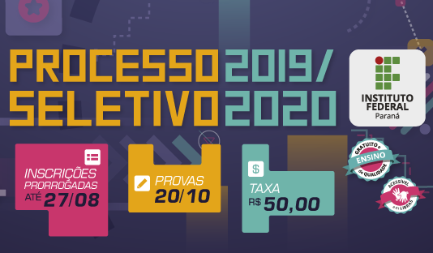

Instituto Federal do Paraná
Campus Paranaguá
Processo Seletivo 2020
Inscrições foram Prorrogadas

Foram prorrogadas até dia 27 de agosto as inscrições para o Processo Seletivo IFPR 2020. Desta forma, os interessados têm mais tempo para conhecer os cursos ofertados pelo Instituto e realizar a inscrição. O pagamento da taxa de inscrição, que tem o valor de R$ 50, pode ser realizado até o dia 28 de agosto. As prorrogações dos editais foram realizadas por meio da publicação dos editais n° 34 e 35, respectivamente referentes ao Processo Seletivo 2019/2020 do IFPR para cursos técnico de nível médio e de graduação.
Para o próximo ano, estão disponíveis 3.693 vagas em cursos técnicos e 2.724 em cursos superiores.
Os cursos técnicos e superiores presenciais do IFPR são oferecidos em 25 cidades do Paraná: Assis Chateaubriand, Astorga, Barracão, Campo Largo, Capanema, Cascavel, Colombo, Coronel Vivida, Curitiba, Foz do Iguaçu, Goioerê, Irati, Ivaiporã, Jacarezinho, Jaguariaíva, Quedas do Iguaçu, Londrina, Palmas, Paranaguá, Paranavaí, Pinhais, Pitanga, Telêmaco Borba, Umuarama e União da Vitória.
O teste seletivo será aplicado nestas localidades, no dia 20 de outubro, e o candidato somente poderá realizar a prova na cidade que oferta o curso para o qual efetuou sua inscrição.
Inscrição
As inscrições devem ser feitas até o dia 27 de agosto, na página da Fundação de Apoio a Universidade Tecnológica Federal do Paraná (Funtef), banca organizadoras das provas.
A taxa de inscrição tem um custo de R$ 50.
Para realizar a inscrição, o candidato deve acessar o site da banca organizadora. É imprescindível que o candidato tenha CPF próprio para realizar a inscrição
Os candidatos que não têm acesso à internet poderão realizar a inscrição nos campi do IFPR. As unidades estarão disponíveis para este atendimento durante todo o período de inscrições, de segunda a sexta-feira, das 14h às 17h.
Cursos Técnicos de Nível Médio
Os cursos técnicos de nível médio são oferecidos nas 25 cidades em que o IFPR está presente. As provas para este nível de formação vão abranger 40 questões objetivas sobre conhecimentos dos anos finais do Ensino Fundamental e uma questão dissertativa de Língua Portuguesa.
Os cursos técnicos de nível médio se subdividem em duas formas de oferta: integrado ao Ensino Médio, destinada aos candidatos que concluíram o nono ano do Ensino Fundamental e desejam cursar o Ensino Médio no IFPR, de forma conjunta a uma formação técnica; e subsequente ao Ensino Médio, destinado aos estudantes que já concluíram este nível de ensino.
Cursos Superiores
Os cursos superiores são oferecidos pelo IFPR em 20 municípios do Paraná. As provas para este nível de formação são compostas por 50 questões objetivas e uma questão dissertativa de Língua Portuguesa.
Os cursos superiores presenciais do IFPR são ofertados nas formas de oferta Bacharelado, Licenciatura e Tecnologia.

Desenvolvido por: Bill Gates